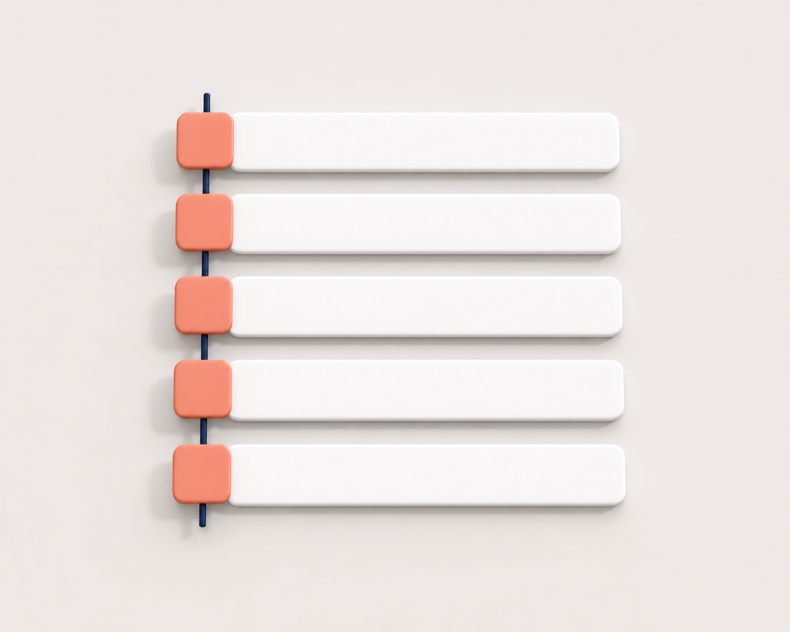

블로그 대행 맡기기 전, 월 관리비보다 먼저 확인할 5가지
월 관리비만 비교하면 이름이 같은 다른 서비스를 견주게 됩니다. 견적 구성, 업무 범위, 원고 소유권, 보고서 기준, 제작 방식까지 계약 전에 확인할 다섯 가지와 그대로 물어볼 문장을 정리했습니다.

블로그 대행을 알아볼 때 가장 먼저 오가는 숫자는 월 관리비입니다. 그런데 같은 금액의 견적 두 장이 같은 일을 뜻하는 경우는 드뭅니다. 한쪽은 원고 네 편과 이미지 네 장이고, 다른 쪽은 원고 열두 편이지만 이미지와 플레이스 관리는 빠져 있을 수 있습니다.
금액을 나란히 놓기 전에 범위를 나란히 놓아야 하는 이유입니다. 이 글은 계약서에 서명하기 전에 확인할 다섯 가지와, 상담 자리에서 그대로 읽어도 되는 질문 문장을 정리했습니다.
같은 금액, 다른 서비스#
견적서에서 월 관리비는 한 줄로 표시됩니다. 그 한 줄 안에 무엇이 들어 있는지는 따로 물어야 보입니다. 원고만 만드는지, 이미지까지 만드는지, 발행과 댓글 관리를 포함하는지, 플레이스 정보를 맞춰 주는지에 따라 실제 작업량은 두세 배 차이가 납니다.
비교할 때 가장 빠른 방법은 항목을 나눠 달라고 요청하는 것입니다. 포함되는 일과 별도로 청구되는 일을 두 칸으로 나눠 받으면, 같은 조건에서 금액을 다시 비교할 수 있습니다. 견적서를 두 장 받았다면 이 작업을 먼저 하시길 권합니다.
확인할 다섯 가지#

1. 견적의 구성 — 무엇이 포함이고 무엇이 별도인가#
월 관리비에 발행 편수, 원고 분량, 이미지 제작, 플레이스 관리가 포함되는지 확인하세요. 이어서 최소 계약 기간, 중도 해지 조건, 재계약 시 인상 조건을 봅니다. 이 세 줄은 견적서 뒤쪽에 작게 적히는 경우가 많지만, 실제로 발목을 잡는 부분입니다.
광고비와 관리비도 구분해서 물어보세요. 광고비는 매체에 지급되는 돈이고 관리비는 작업의 대가입니다. 둘이 합쳐진 견적은 나중에 예산을 줄이거나 늘릴 때 어느 쪽을 조정하는지 알기 어렵습니다.
2. 업무 범위 — 무엇을 몇 개까지#
범위는 형용사가 아니라 숫자로 적혀야 합니다. 한 달에 원고 몇 편인지, 원고 분량을 공백 포함으로 세는지 제외로 세는지, 이미지는 몇 장인지, 수정은 몇 회까지인지, 발행 채널은 어디까지인지입니다. 댓글과 이웃 관리, 예약·문의 응대 지원이 포함인지도 여기에 해당합니다.
숫자가 없으면 잘못됐을 때 기준도 없습니다. "성실히 운영합니다"라는 문장은 분쟁에서 아무것도 증명하지 못합니다.
3. 원고와 이미지의 소유권#
계약이 끝난 뒤에도 그동안 쓴 글을 계속 쓸 수 있는지, 다른 채널로 옮길 수 있는지, 편집 가능한 원본 파일을 받을 수 있는지 확인하세요. 사진도 마찬가지입니다. 업체가 제공한 사진의 사용 범위, 직원이나 손님 얼굴이 나온 사진의 동의, 외부에서 가져온 이미지의 책임 소재가 계약서에 적혀 있어야 합니다.
저작권은 계약에서 정한 바에 따르는 경우가 많습니다. 구두로 "괜찮다"고 들은 말보다 조항 한 줄이 오래 남습니다. 이 항목은 계약서 사본을 받아 직접 읽어 보시길 권합니다.
4. 보고서의 기준#
보고서에 무엇이 들어가는지, 어떤 주기로 오는지, 무엇과 비교하는지를 확인합니다. 전월 대비인지 전년 동월 대비인지에 따라 같은 숫자도 다른 뜻이 됩니다. 발행 편수는 진행 상황이고, 유입과 행동과 문의가 성과입니다. 이 셋을 구분해 적는지가 보고서의 품질을 가릅니다.
글별로 플레이스 이동 인원을 정확히 나누는 일은 측정 도구와 추적 설정에 따라 한계가 있습니다. 그 한계를 밝히고 채널 단위 수치와 문의 기록을 함께 보여주는 보고서가 실무에 가깝습니다. 이 기준은 블로그 조회수는 오르는데 문의가 없을 때에 더 자세히 적었습니다.
5. 제작 방식 — 누가 무엇을 만드는가#
원고를 누가 쓰는지, 이미지는 어떻게 만드는지, 촬영이 포함인지 아닌지를 확인합니다. 촬영이 포함이라면 일정과 인원, 재촬영 비용까지 물어보세요. 포함이 아니라면 대신 무엇으로 채우는지가 중요합니다. 업체가 가진 사진과 영상만으로 어디까지 만들 수 있는지가 여기서 갈립니다.
AI를 쓰는지도 물어볼 만합니다. 쓰는 것 자체가 문제가 아니라, 쓴 사실을 숨기거나 사람이 직접 취재한 것처럼 꾸미는 것이 문제입니다. 검수 단계가 있는지, 최종 원고를 누가 확인하는지도 함께 확인하세요.
노티스랩이 이 다섯 가지를 정리하는 방식#
첫 상담에서는 원고를 쓰지 않습니다. 검색 유입, 플레이스 정보, 응대 기록 가운데 어디에서 흐름이 끊겼는지부터 확인합니다. 그 결과에 따라 첫 달에 할 일의 순서가 달라지기 때문입니다.
견적서에는 포함 항목과 별도 항목을 나눠 적고, 발행 편수와 원고 분량은 숫자로 적습니다. 원고와 이미지의 사용 범위는 계약서에 남깁니다. 보고서는 한 장으로 만들고, 위에서부터 유입, 행동, 문의를 놓은 뒤 발행 편수는 맨 끝에 진행 상황으로만 적습니다.
제작은 업체가 제공한 기존 사진과 영상을 바탕으로 기획하고 편집합니다. 별도 현장 촬영은 기본 서비스에 포함하지 않으며, 필요하다고 판단되면 비용과 일정을 따로 협의합니다. 촬영을 기다리지 않고 다음 주부터 발행할 수 있다는 점이 이 방식의 장점이고, 동시에 한계입니다. 신메뉴나 바뀐 공간처럼 자료가 없는 장면은 반영이 늦어질 수 있습니다.
견적서 두 장을 같은 표에 놓는 방법#
비교가 어려운 이유는 항목이 서로 다르게 적혀 있기 때문입니다. 종이 한 장에 직접 표를 그려 보시면 빠릅니다. 왼쪽에 항목을 적고, 오른쪽에 업체별 값을 나란히 놓습니다.
- 월 관리비. 부가세가 포함인지 별도인지 적습니다.
- 포함 업무. 원고 편수, 원고 분량, 이미지 장수, 발행 채널을 숫자로 적습니다.
- 별도 업무. 촬영, 플레이스 관리, 광고 운영이 빠져 있지 않은지 확인합니다.
- 계약 조건. 최소 기간, 해지 절차, 갱신할 때 인상 조건을 적습니다.
- 산출물. 원고 원본, 이미지 원본, 계정 권한을 누가 갖는지 적습니다.
- 보고. 주기, 지표, 비교 기준을 업체별로 나란히 적습니다.
빈칸이 남는 항목이 곧 나중에 문제가 될 항목입니다. 업체가 답하지 못한 칸은 계약 전에 서면으로 받아 두세요.
계약 전에 그대로 물어볼 다섯 문장#
- 이 금액에 포함된 것과 별도로 청구되는 것을 항목으로 나눠 주실 수 있나요?
- 한 달에 원고 몇 편, 몇 자이고 이미지는 몇 장인가요? 수정은 몇 회까지 가능한가요?
- 계약이 끝난 뒤에도 원고와 이미지를 계속 쓸 수 있나요? 원본 파일도 받을 수 있나요?
- 보고서에는 어떤 지표가 들어가고, 무엇과 비교해 주시나요?
- 촬영이 필요해지면 비용과 일정은 어떻게 정하나요?
이 다섯 문장에 바로 답이 나오지 않는다면, 답을 준비하는 동안 비교를 잠시 멈추셔도 됩니다. 계약 전에 답하지 못하는 항목은 계약 후에도 기준이 없습니다.
다섯 가지를 확인해도 남는 것#
대행사가 성실하게 일해도 결과는 업종과 상권, 시즌에 따라 달라집니다. 어떤 방식으로도 매출이나 상위 노출을 보장할 수 없습니다. 보장을 앞세우는 제안일수록 산출 근거와 계약 조건을 먼저 확인하세요.
계정 소유권도 함께 정리해 두시길 권합니다. 블로그와 플레이스의 관리자 권한은 사장님 계정에 두고, 대행사는 초대받은 관리자로 참여하는 형태가 안전합니다. 그래야 계약이 끝나도 쌓인 자료와 통계가 남습니다.
자주 묻는 질문#
월 관리비가 낮으면 무조건 유리한가요?#
그렇지 않습니다. 금액이 낮은 견적은 범위가 좁은 경우가 많습니다. 이미지 제작이나 플레이스 관리가 빠져 있어 사장님이 직접 채워야 한다면, 실제로 드는 시간까지 합쳐 비교해야 합니다. 반대로 범위가 넓어도 원고 분량이 적거나 발행 주기가 길면 같은 금액이 아닙니다.
원고 소유권은 계약서에서 어떻게 확인하나요?#
계약서에서 저작권과 사용 범위를 다루는 조항을 찾아 읽으시면 됩니다. 계약 종료 후 사용 가능 여부, 2차 활용과 재판매, 원본 파일 제공, 사진 사용 범위가 적혀 있는지 보세요. 조항이 없으면 서명 전에 문구를 추가해 달라고 요청하시는 편이 좋습니다.
계약 기간은 얼마가 적당한가요?#
정해진 답은 없습니다. 다만 검색 유입은 몇 주 만에 판단하기 어렵기 때문에, 너무 짧은 기간은 결과를 보기 전에 끝납니다. 첫 계약은 짧게 시작하되 갱신 조건과 해지 절차를 분명히 해 두고, 최소 석 달은 같은 조건으로 두고 보시길 권합니다.
마무리: 비교표보다 질문이 먼저입니다#
월 관리비는 결과를 알려주지 않습니다. 포함된 일의 범위, 원고와 이미지의 사용 범위, 보고서의 기준, 제작 방식이 함께 적혀야 그 금액이 무엇을 사는 것인지 보입니다.
지금 받아 둔 견적서가 있다면 포함과 별도 항목만 나눠 봐도 비교가 훨씬 선명해집니다. 운영 중인 블로그와 플레이스 주소를 함께 보내주시면, 지금 상태에서 첫 달에 무엇부터 하는 게 맞는지 정리해 드립니다.
KEEP READING
이어서 읽기
같은 흐름에서 이어지는 글입니다. 지금 매장에 해당하는 지점부터 읽으시면 됩니다.

매장 사진 10장으로 블로그와 릴스까지 만들 수 있을까?
촬영 없이 매장 사진 10장으로 블로그 글 세 편과 릴스 한 편을 만드는 실제 순서를 정리했습니다. 사진을 고르는 기준, 글과 영상에 컷을 나누는 법, 자막과 편집에서 정하는 것, 10장으로 안 되는 경우까지.

블로그 조회수는 오르는데 문의가 없을 때, 대행사 보고서에서 확인할 세 줄
조회수는 오르는데 문의가 없다면 원인은 네 갈래입니다. 대행사 보고서에서 새 검색어·플레이스 행동·다음 달 수정 한 줄을 확인하는 법과 사장님이 직접 하는 월간 점검 다섯 가지를 정리했습니다.